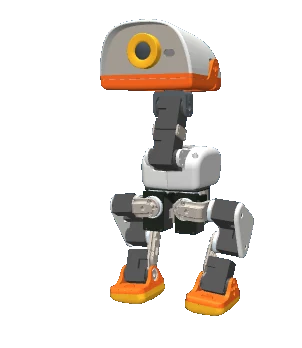

Impressions
Alertes
Aujourd'hui
Sa carte
Il n'a pas encore exploré depuis son démarrage.
Où l'a-t-il vu ?
Minuteurs et rappels
Un rappel à heure fixe
À l'heure dite, il le signale en sons de canard, même en mode calme. Une caresse l'arrête. Le réveil doux se règle dans Réglages → Sa journée → Routines.
Messages
Laisse un message pour quelqu'un : quand il le verra (à son retour, ou tout de suite s'il est là), le canard le lui signalera en pépiant, et le texte s'affichera ici.
Jeu de balle
Défi à plusieurs
Chacun son tour pose la balle devant lui et lance : un tir réussi rapporte un point.
Sur sa carte
Choisis un jeu, puis touche sa carte.
Il faut qu'il ait un peu exploré pour avoir une carte.
Mode photo
Il prend la pose et la tient, sans un son, le temps de la photo (sa caméra).
Ses tours à lui
Compose des chorégraphies : positions de tête, sons de canard, gestes, s'asseoir.
Comportements
Les politiques apprises (Pollen et communauté) : installées, à essayer, à ajouter.
Jeux
Tours
Marcher
Garde le doigt appuyé pour continuer. Petits pas guidés : il refuse d'avancer s'il y a un obstacle ou un vide. Pas de marche arrière (il ne voit pas derrière).
Regarder
Ou fais glisser ton doigt : il regarde où tu pointes.
Diagnostic
—
Batterie
Ses batteries
Écris 1, 2 et 3 au feutre sur tes batteries : il suit la santé de chacune.
Servos et températures
Chutes
Usure des servos
Au repos debout, chaque jour : l'effort de chaque servo (courant) et la chaleur. Un servo qui force de plus en plus s'use : mieux vaut le savoir avant qu'il ne lâche.
Pas encore assez de jours de mesure (il en faut quelques-uns au repos).
Comparer les batteries
Carnet d'entretien
Un servo ou une batterie notés « remplacés » repartent d'une mesure neuve.
Mises à jour et rapport
- Cerveau
- —
Le rapport sert à demander de l'aide (Pollen, communauté) : versions, santé, alertes. Aucun prénom, lieu, réseau ni journal de la maison. Le logiciel du robot lui-même se met à jour par l'appli officielle de Pollen.
Ses réglages
Au milieu : tel qu'il est. Sa personnalité continue d'évoluer avec ce qu'il vit.
Personnalité
Sa voix
Ses petits sons préférés : ceux qui font réagir la maison reviennent plus souvent.
Ceux qu'il connaît
Modes
Assis, silencieux, il ne bouge plus.
Maison vide : il signale une voix, un choc, des coups à la porte.
Maison vide pour longtemps : calme et garde, et des nouvelles chaque soir à 20 h.
Les couper 30 minutes.
L'effacer (meubles déplacés, nouvel endroit). Elle repart aussi de zéro à chaque démarrage.
Mise en route
À la livraison, dans l'ordre. Les points marqués « auto » se cochent tout seuls.
Aide
Questions fréquentes, et ce que veut dire chacun de ses états.
Connexions et configuration
Son nom, les habitants, les codes, Home Assistant (facultatif), tes imprimantes 3D, les appareils de la maison.
Sa journée
Assis et silencieux la nuit.
Il s'étire et dit bonjour.
Vide : comme en semaine.
Il apprend où l'on mange et vient voir.
Un diagnostic rapide au premier réveil.
Plus vif le matin, plus calme le soir.
À heure fixe, les jours choisis.
Lieux
Il reconnaît où il est par le Wi-Fi : sur un réseau inconnu, il crée un nouveau lieu ; de retour sur un réseau connu, il y rebascule tout seul.
Archives
Casque (Meta Quest)
L'appli Microduck XR du casque : son plan en réalité augmentée, et le canard jumeau (le canard simulé sur ton PC, dessiné dans ta pièce).
—
Appairer le casque
Dans le casque, clique le joystick gauche, puis tape cette adresse et ce code au clavier. Ils restent gardés dans le casque : pas besoin de recompiler l'appli pour changer de canard.
Canard jumeau
Invités
Un code pour quelques heures (un ami, les grands-parents) : jouer, regarder, laisser un message. Ni réglages, ni marche guidée, ni photos.
Ce téléphone
Quand ce téléphone rejoint le Wi-Fi de la maison, il t'accueille (même sans Home Assistant).
Afficher la liste de la livraison dans les réglages.
Language
Sur un autre appareil
Scanne le QR avec l'appareil photo (même Wi-Fi), ouvre dans Safari, puis Partager → « Sur l'écran d'accueil » : l'appli s'installe comme les autres.
Windows, Mac, Linux : l'appli Microduck pour ordinateur trouve le canard toute seule.
Sauvegarde
Ce qu'il a appris (habitants, personnalité, lieux, batteries), tes schémas et ses réglages, dans un fichier sur ce téléphone. Jamais le jeton Home Assistant.
—
Ses photos
Il garde quelques images de sa journée (le chat, un retour, une partie, une impression finie). Sur lui seulement, 7 jours, jamais ailleurs.
Pas de photo pour l'instant.
Son humeur
Il faut quelques heures de vie pour tracer son humeur.